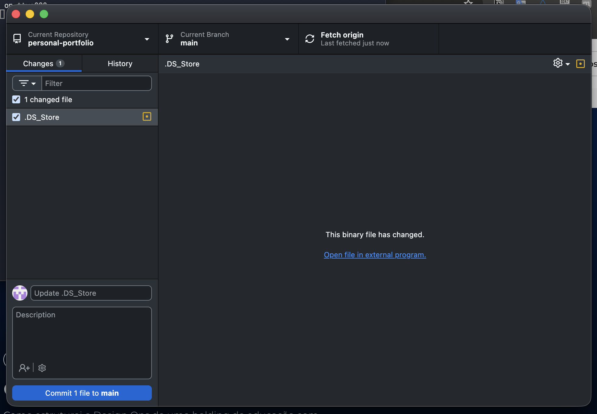
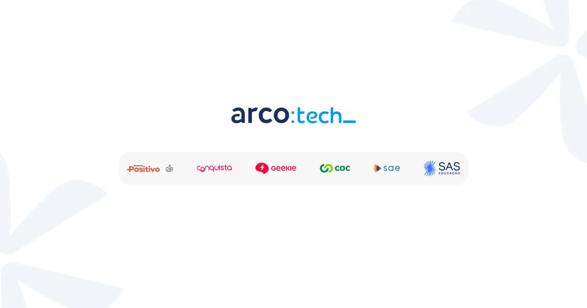
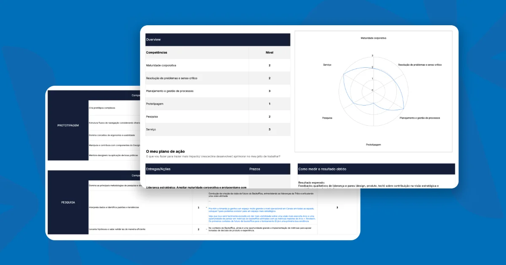

Design Ops
Design SystemDesign Leadership
Team Building
Chapter de Design · Arco Educação
{{ t.heroSubtitle }}
{{ t.metaPeriodLabel }}
{{ t.metaPeriodValue }}
{{ t.metaTeamLabel }}
{{ t.metaTeamValue }}
{{ t.metaStakeLabel }}
{{ t.metaStakeValue }}
{{ t.qfProblemTitle }}
{{ t.qfProblemBody }}
{{ t.qfGoalTitle }}
{{ t.qfGoalBody }}
{{ t.qfRoleTitle }}
{{ t.qfRoleBody }}
{{ t.s01Eyebrow }}
{{ t.s01Title }}
{{ t.s01P1 }}
{{ t.s01P2 }}
{{ t.s01P3 }}

{{ t.s02Eyebrow }}
{{ t.s02Title }}
{{ t.s02P1 }}
{{ t.s02P2 }}
{{ t.s02P3 }}
{{ t.chatArcoTitle }}
{{ t.chatArcoBody }}
{{ g.caption }}
{{ t.s03Eyebrow }}
{{ t.s03Title }}
{{ t.s03P1 }}
{{ t.s03P2 }}
{{ t.s03P3 }}
{{ t.claudeTitle }}
{{ t.claudeBody }}
{{ g.caption }}
{{ t.s04Eyebrow }}
{{ t.s04Title }}
{{ t.s04P1 }}
{{ t.s04P2 }}
{{ g.caption }}
{{ t.s05Eyebrow }}
{{ t.s05Title }}
{{ t.s05P1 }}
{{ g.caption }}
{{ t.s06Eyebrow }}
{{ t.s06Title }}
{{ t.s06P1 }}
{{ t.s06P2 }}

{{ t.pdiCaption }}
{{ t.s07Title }}
{{ t.s07Body }}
{{ g.caption }}
{{ t.s08Eyebrow }}
{{ t.s08Title }}
{{ t.s08P1 }}
{{ t.s08P2 }}
{{ t.s08P3 }}
{{ t.s08P4 }}
{{ t.testiLabel }}
{{ t.testiTitle }}
{{ t.testiQuote }}
Amanda Camin
{{ t.testiRole }}
{{ t.nextCaseLabel }}
{{ t.nextCaseTitle }}
{{ lightboxCaption }}